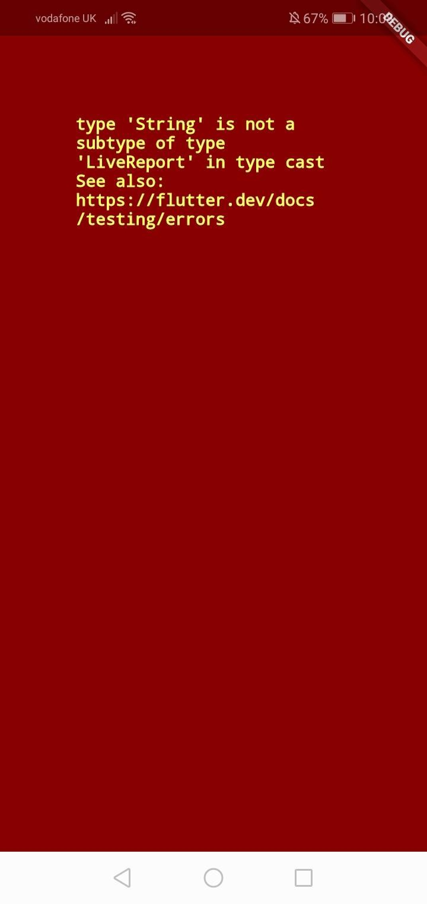
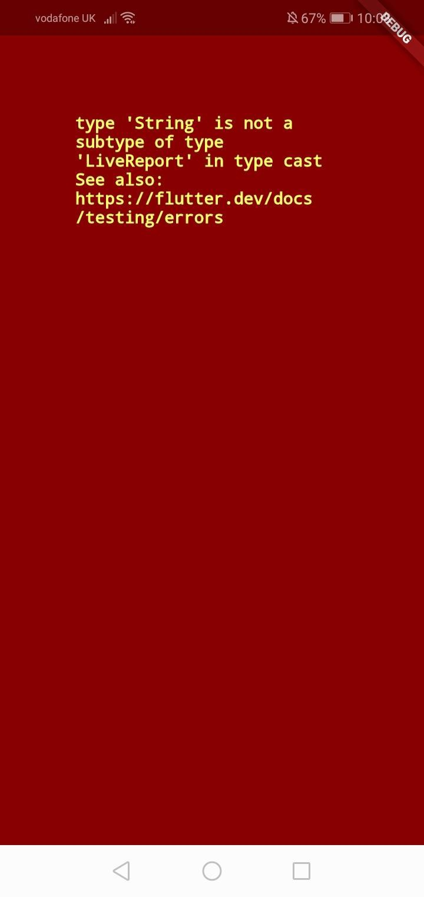

Last updated 4 October 2021
Thank you for volunteering to test Project Badger. This document provides some guidance on the current state of the app and the kind of feedback we are looking for. If you've opted into testing and we have your email address, we'll notify you by email if there are significant changes to what we're asking testers to look at.
We're grateful for any feedback you can provide, as it all helps us understand what users of the app may expect, and helps ensure problems can be ironed out before the app's public release.
The app's central purpose is to guide you through the process of understanding and documenting badger persecution and related forms of wildlife crime, helping you gather relevant evidence and ensuring incidents are brought to the attention of the Badger Trust, and where appropriate to the police and local badger groups.
The main way the app does this is by taking you through a series of information screens and questions. When appropriate, a report is generated based on your answers to these questions, which you can then review and send to the Badger Trust by email.
Until further notice, anything you do in the app and any report you produce is for testing purposes only, and will be understood as such when received by the app developer or the Badger Trust. You can therefore safely experiment with hypothetical reports and don't need to worry about anything you do in the app causing someone to believe an actual crime has occurred or that badgers are in danger. Please do not use the app to report real incidents yet!
If you have real information you would like to bring to the attention of the Badger Trust while the app is in its testing phase, please use the Reporting Centre on their website.
We will notify you when this changes and the app goes 'live'.
Please note that by design the app does not send reports directly, but helps you prepare them to be sent by email. This means you will need to have an email app set up on your device.
During the testing period, you'll find some app features will be enabled or disabled at different times depending on the requirements of the app development process.
Changes and upgrades to the app are rolled out on an ongoing basis. Please ensure your device is set up to update its apps automatically so you can receive these promptly.
The app is intended for use on Android-based smartphones and iPhones. It should also work on Android-based tablets and iPads, but has not been designed specifically for these platforms. This is because most tablets are used on Wi-Fi and are less likely to be taken out into the field, and we do not anticipate as many users on tablets as on smartphones. The visual appearance of the app may therefore look odd on a large tablet screen, but it should still function. Although tablet integration is a not a current development priority, if something that works on your phone does not work on your tablet, or if its appearance makes it impossible to use, please feed this back.
Explore the app however you like. There are however two approaches we'd especially like testers to take.
Put yourself in the position of someone who has come across some form of badger persecution or a similar incident, and who wants to understand what they should do or how to report it using the app. Recall a scenario you've come across yourself in the past if you can, and imagine you had the app available to you at the time. Work through the questions and screens presented by the app and send in a report.
Example situations will appear here with a future release of the app, when sufficient features are enabled.
Try to think of scenarios those who designed and built the app may not have considered: odd cases but ones that are nevertheless within the scope of the incidents we are trying to encourage members of the public to report.
Work through and explore the various options the app presents. Behind the scenes of the app is a kind of flowchart of questions and decision points that lead you to different screens according to the information and answers you provide. Try to come up with answers to lead you down different paths within this flowchart so you can see as many of the different screens as possible.
Questions to ask yourself and provide feedback on:
If you like, try to break the app and cause errors. These won't harm your device in any way: smartphones wall apps off from each other in ways that prevent this. The worst that can happen is that the app will crash and close down, and it is important that we find any weaknesses that allow crashes to happen before the app is released to the public.
In general we're keen to hear about anything that doesn't behave the way you as a user would expect. Due to various design constraints, some of these may be intentional even if they may appear undesirable, but some are likely to be the result of errors we hadn't anticipated and which we can resolve.
We're especially keen to hear about fully-fledged errors or misbehaving features of the app. For example, if you went through the motions of generating a report about farming-related sett interference, selected "farming" instead of "forestry" when this option was presented to you, but then found the report you had generated at the end inexplicably mentioned forestry, this would be an indication of a bug.
If anything flows off the edge of the screen or is clipped, obscured or otherwise unreadable, please take a screenshot.
Watch out for spelling mistakes and typos that may have slipped through.
If you have access to multiple devices, it can be very helpful to interact with the app on both of them in parallel, noting any differences. There are likely to be subtle differences in presentation, especially because smartphones have such a wide range of screen sizes and aspect ratios, but apart from these the app should function in a similar or identical way regardless of the type of phone you are using.
There are inevitably some differences in the way the app behaves on Android vs iOS (Apple's operating system for iPhones and iPads). Most apps are developed quite separately for these two platforms, or are just made available on one of them. By contrast, we are trying as far as possible to build something that works equally well on both.
Some differences between the two platforms are presentational, for example the placement of back buttons, but the way they handle device permissions (e.g. when we need to use your location) and with other apps is inevitably quite different.
We would like the app to feel natural on both platforms, and this means doing some things differently by design. Feedback would be helpful on anything that strikes you as "not the usual iPhone way of doing things" (for example), as we want to avoid jarring or unexpected experiences for users who are accustomed to one platform or the other.
The app is designed to handle any errors internally and it should not close unexpectedly. If it does, please try to note down as soon as you can what you were doing before it crashed, and what exactly you did (e.g. tap a particular button) that brought it about.
If your phone's operating system gives you an option to send an automated crash report, please do this, but it's more important to follow up by email with a description of what occurred.
Screens you shouldn't see:
 

If a particular feature is disabled in the version of the app you are testing, it should at least display a message to say so. If you tap a button and it does absolutely nothing, please provide feedback about which button and what screen you were on. It's often helpful if a report like this is accompanied by a screenshot.
In general for all bugs, the more reliably a developer can reproduce the problem on their own device the easier it is to find and fix the problem. This is why it's helpful to provide as much information you can about the steps that lead up to an error or instance of unexpected behaviour.
Please send any feedback by email to the address you'll have from when you opted into testing. If it's easier for you to send screenshots via a messaging app (e.g. Signal, Telegram, WhatApp) rather than attaching them to an email, just ask and a phone number can be provided.
Note that if you provide feedback that includes screenshots, personal details might be included, such as your location if you send in a screenshot of a place in the app where your location is displayed. Please refer to the privacy policy for information about how your personal data is handled.